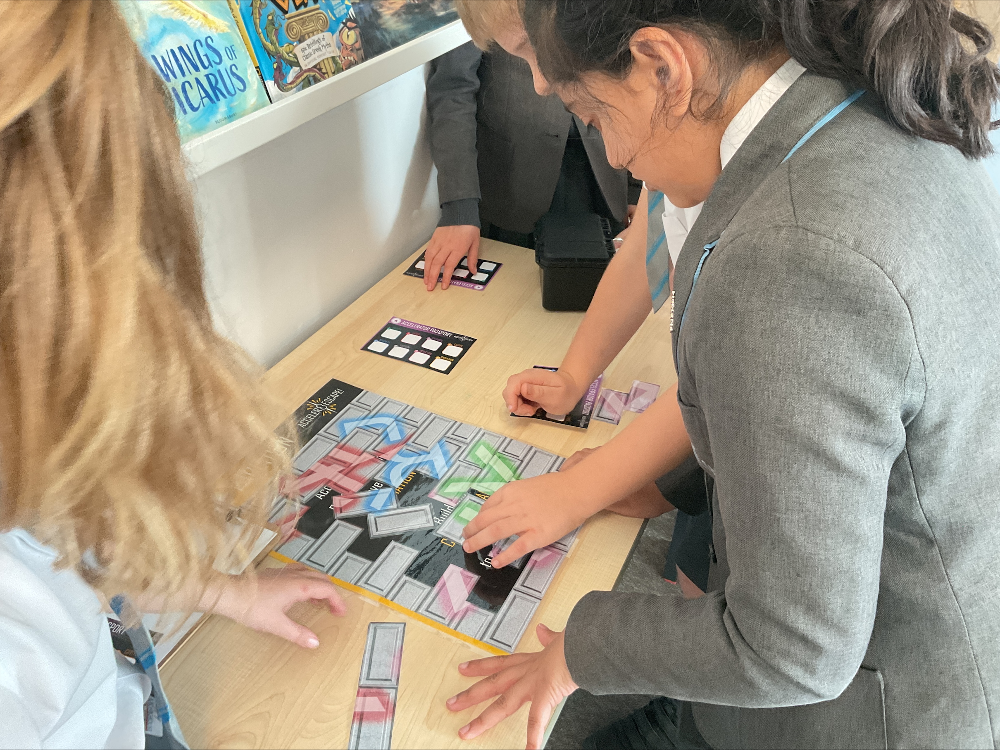
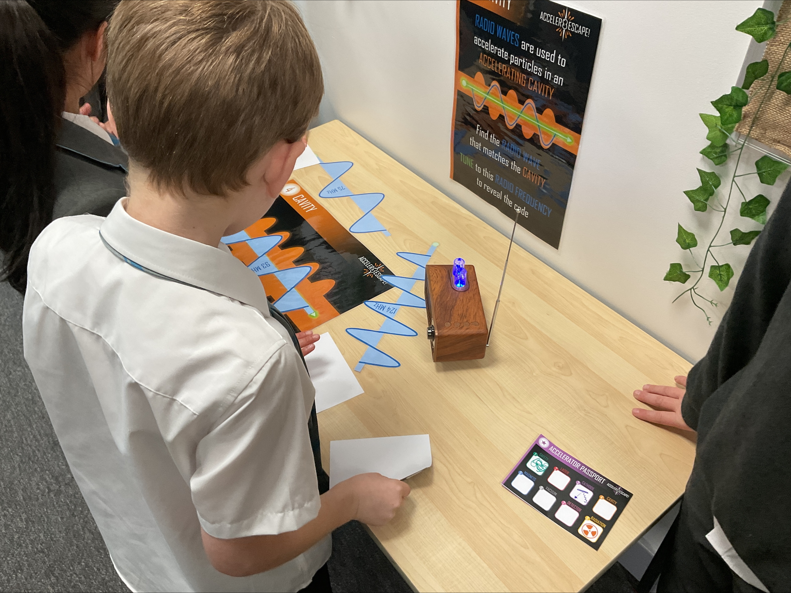

Dimension européenne
30 ans d'actions Marie Skłodowska-Curie.
Cet anniversaire permet de relier chaque activité ERNEST à une histoire européenne plus large: une recherche qui traverse les frontières, rencontre de nouveaux publics et fait de l'engagement citoyen un moment culturel partagé.
À travers la Nuit européenne des chercheuses et des chercheurs et Researchers at School, ERNEST contribue à rendre visible la dimension européenne de la science dans les événements locaux, les écoles, les espaces publics et les échanges avec les citoyennes et citoyens.
Ce que fait le projet
La médiation scientifique devient une aventure.
Des concepts aux expériences
ERNEST fait sortir la physique et l’astronomie de leurs cadres habituels pour les transformer en expériences immersives. Le public relève des défis inspirés de la méthode scientifique, de l’exploration spatiale, de la lumière, de la matière et de l’univers lui-même.
Chaque activité est conçue pour rendre la recherche accessible, concrète et inoubliable, offrant ainsi une manière ludique et enrichissante de s'initier à la pensée scientifique.
À qui s’adresse le projet
Le projet s’adresse aux enfants, aux adolescentes et adolescents, aux adultes, aux familles, aux écoles et à toutes les personnes curieuses qui souhaitent découvrir les sciences dans un cadre dynamique et collaboratif.
Où et quand
Les escape rooms d’ERNEST peuvent être installées dans des contextes variés, tout d'abord lors de la Nuit européenne des chercheuses et des chercheurs mais aussi lors d’autres événements déstinés à sensibilier le grand public aux sciences. Suivez-nous pour en savoir plus les prochains rendez-vous.
Pour aller plus loin
L’histoire d’ERNEST, de l’idée à l’impact.
Explorez les pages suivantes pour mieux connaître le projet, ses différentes escape rooms et les équipes qui les réalisent.
ERNEST
Le projet derrière le jeu
Découvrez la vision d’ensemble du projet, sa mission, sa méthode de travail et l’impact qu’ERNEST souhaite générer grâce à la médiation scientifique.
Ouvrir la page du projetJouer et explorer
Trouvez votre escape room
Parcourez toutes les escape rooms du projet, comparez leurs caractéristiques et leurs thèmes, et découvrez comment la recherche devient une expérience interactive pour des publics variés.
Explorer les escape roomsLe réseau
Les personnes et les institutions
Découvrez les institutions, les chercheuses, les chercheurs, les médiatrices, les médiateurs et les partenaires qui collaborent pour donner vie à ERNEST dans toute l’Europe.
Découvrir le réseauPourquoi des escape rooms
Parce qu’elles rendent la recherche participative, sociale et inoubliable
Apprendre en agissant
Les énigmes deviennent des portes d’entrée vers la pensée scientifique, transformant la résolution de problèmes en découverte.
La recherche dans l’espace public
Laboratoires et observatoires se transforment en lieu d'expériences accessibles et captivantes pour tous.
Des événements qui comptent
ERNEST aide les universités et les organismes de recherche à toucher des publics bien au-delà du cadre académique traditionnel.
Universités et institutions participantes
Un réseau d’acteurs qui collaborent pour la médiation scientifique.
Pour une vue d’ensemble des rôles, des institutions et des personnes impliquées, consultez la page dédiée au réseau ERNEST.


Programme des événements
Les prochaines occasions d’entrer dans l’univers ERNEST.
Découvrez les prochains événements ERNEST: les détails du programme et les liens d’inscription seront ajoutés au fur et à mesure de la confirmation des activités.
Septembre 2026
Nuit européenne des chercheuses et des chercheurs
Grand rendez-vous avec des expériences d'escape game ERNEST pour un large public.
Voir les événements de la Nuit européenneAutomne 2026
La science rencontre l’école
Des activités dans les écoles avec des formations pour les enseignants, des ateliers de co-création et des expériences d'"escape room" animées par des chercheuses et des chercheurs, permettant aux élèves dé découvrir la démarche scientifique à travers l'enquête, la résolution d'énigmes et le travail collaboratif.
Hiver 2026
La science rencontre l’école
Un format itinérant d’escape room pensé pour les élèves du secondaire et pour les équipes pédagogiques.
Galerie photo
Un aperçu des ateliers, des installations et des activités publiques.
Une sélection d’images prises lors d’ateliers et d’événements publics récents.



